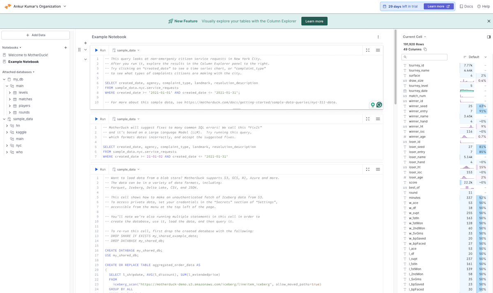

DuckDB #
- DuckDB is an open-source, in-process OLAP database used by data professionals to analyze data quickly and efficiently.
- Released in 2019, DuckDB is emerging as in-memory/in-process SQL-based processing engine for OLAP workload. It is Opensource and available with MIT license.
- DuckDB is used at Facebook, Google, and Airbnb.
- Enterprise support: DuckDB Labs available as a consulting firm along with MotherDuck (which has received $100m funding for its data platform based on DuckDB, with investors including Andreessen Horowitz)
- Supports vector database capabilities with HNSW search
- Processing supported: CSV, JSON, Parquet, and Apache Arrow, as well as several databases, like MySQL, SQLite, and Postgres.
- DuckDB in Action Book
DuckDB is a modern embedded analytics database that runs on your machine and lets you efficiently process and query gigabytes of data from different sources.
Use-cases - where to use? #
- Access huge volume of data (up to GBs) locally and process quickly. It is easier to set up than a Spark cluster, has lower resource requirements than pandas, easier to set up and use than PostgreSQL, Redshift, and other RDBMS, faster than SQLite, Talend for analytical workloads, and more.
- Data doesn’t leave your system (local or privacy-compliant hosting)
- RAG Solution with DuckDB
- Building AI Agents with DuckDB, DLT, Cognee
- MotherDuck extends the functionality for building AI apps using EMBED and PROMPT functions.
- Sample use-cases such as analyzing log files where they are stored, without needing to copy them to new locations, preprocessing and pre-cleaning of user-generated data for machine learning, etc. training
- Cloud vendors offer expensive analytics services,like BigQuery, Amazon Redshift, and AWS Athena, which charge by processed data volume. Replace many of those uses with scheduled cloud functions processing the data with DuckDB. You can also chain those processing functions by writing out intermediate results to cloud storage, which can then also be used for auditing.
Where not to use? #
- Not suitable for streaming data as data needs to be available
- Data volumes exceed a few hundred gigabytes. The data volumes you can process with DuckDB are mostly limited by the main memory of the system.
- Minimal support for transactions and parallel write access
Integration #
- Many extensions available for extending the functionality
Sample Projects #
Cloud #
- MotherDuck provides hosted version of DuckDB (registered using GitHub): app.motherduck.com
Integration #
Local Setup #
brew install duckdb
duckdb
.exit -- DOT commands
vi $HOME/.duckdbrc
-- Duck head prompt
.prompt 'O> '
-- Example SQL statement
select 'Ankur | Begin quacking now '||cast(now() as string) as "Ready, Set, ...";
Common Commands #
DESCRIBE
SELECT *
FROM duckdb_extensions();
INSTALL httpfs;
LOAD httpfs;
SELECT count(*)
FROM 'https://github.com/bnokoro/Data-Science/raw/master/'
'countries%20of%20the%20world.csv';
.mode line
SELECT *
FROM read_csv_auto("https://bit.ly/3KoiZR0")
LIMIT 1;
duckdb -csv \
-s "SELECT Country, Population, Birthrate, Deathrate
FROM read_csv_auto('https://bit.ly/3KoiZR0')
WHERE trim(region) = 'WESTERN EUROPE'" \
> western_europe.csv
PARQUET handling #
- Exporting data in Parquest format
duckdb \
-s "COPY (
SELECT Country, Population, Birthrate, Deathrate
FROM read_csv_auto('https://bit.ly/3KoiZR0')
WHERE trim(region) = 'WESTERN EUROPE'
) TO 'western_europe.parquet' (FORMAT PARQUET)"
duckdb -s "FROM 'western_europe.parquet' LIMIT 5"
- Reading Parquet Data
select * from read_parquet('https://oedi-data-lake.s3.amazonaws.com/pvdaq/parquet/metrics/metrics__system_10__part000.parquet')
FROM parquet_schema( 's3://us-prd-md-duckdb-in-action/nyc-taxis/yellow_tripdata_2022-06.parquet') SELECT name, type;
-- 118M records
CREATE OR REPLACE VIEW allRidesView AS
FROM 's3://us-prd-md-duckdb-in-action/nyc-taxis/
yellow_tripdata_202*.parquet';
.timer on
SUMMARIZE allRidesView;
ICEBERG handling #
INSTALL iceberg;
LOAD iceberg;
SELECT count(*)
FROM iceberg_scan('data/iceberg/lineitem_iceberg', allow_moved_paths = true);
Reference Datasets #
- Tennis Dataset
- Photovoltaic Data Acquisition (PVDAQ) Public Datasets
- Stackoverflow Data
- Stack Exchange Data on Archive
- New York Taxi Data
Motherduck UI #
